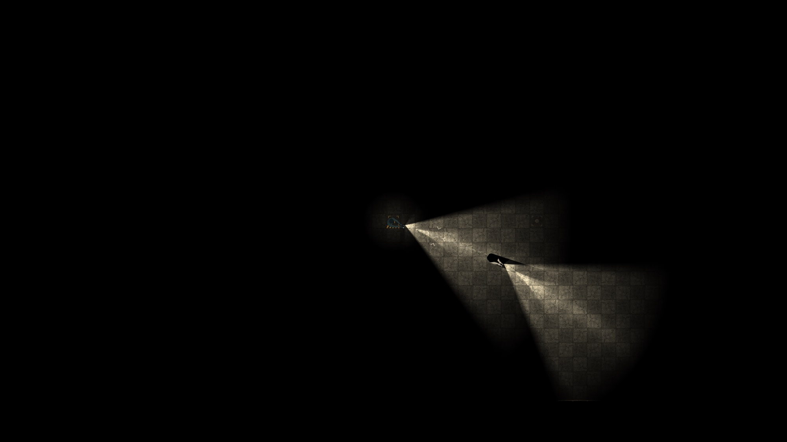
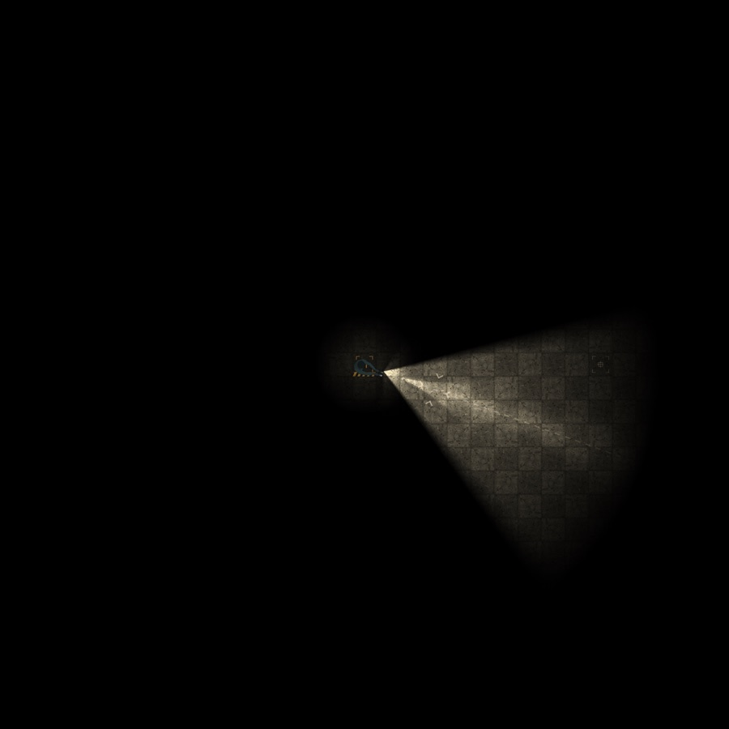
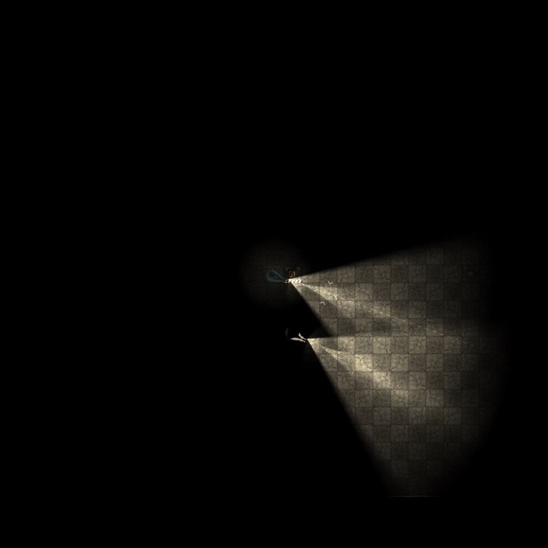
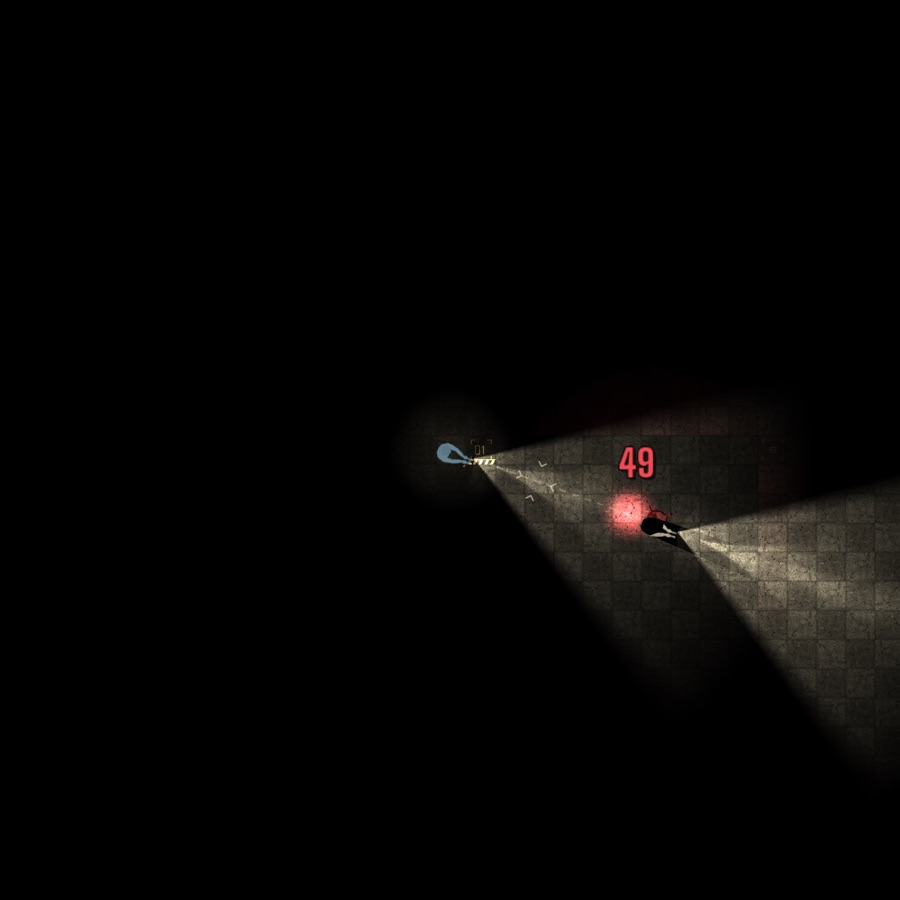
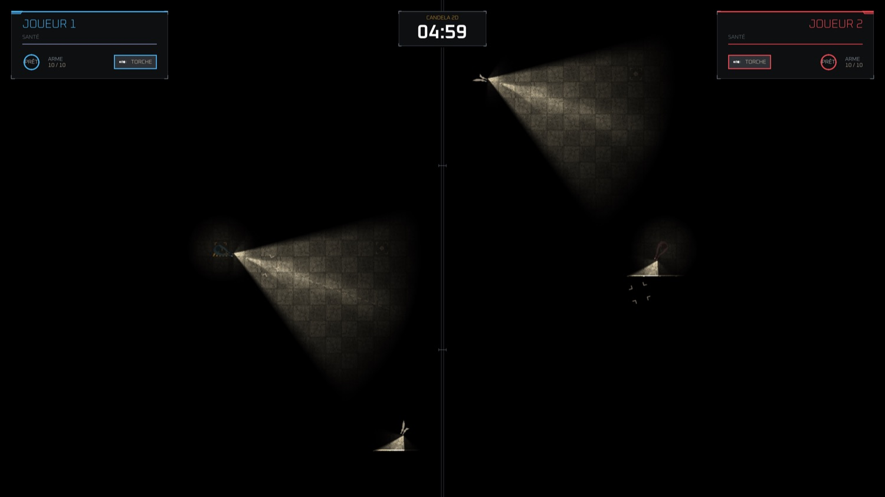
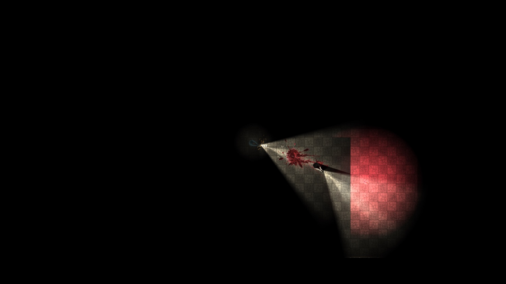
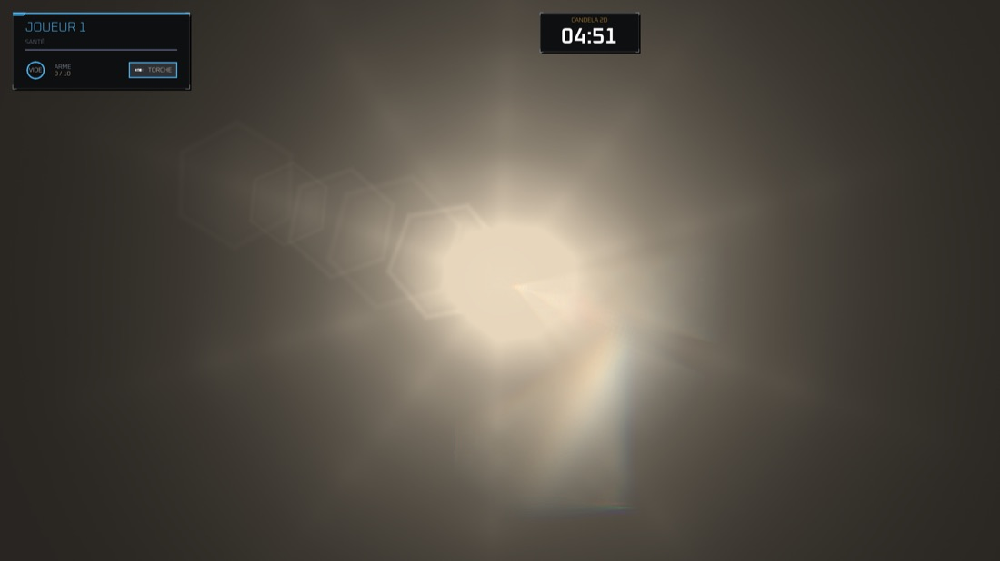

Candela
Voir sans être vu.
Tuer sans être tué.
Un duel à deux dans le noir absolu. Vous avez une lampe torche et une arme. Votre adversaire aussi. Le faisceau qui vous montre où il est lui montre où vous êtes.
Descendez
Jouer
Télécharger
v0.4.2Première ouverture sur Mac
Candela n’est pas distribué par l’App Store, alors macOS demande votre accord une première fois. Quatre gestes, une seule fois dans la vie du jeu.
Ouvrez le fichier téléchargé, puis glissez Candela dans votre dossier Applications.
Double-cliquez sur Candela. macOS refuse et affiche un avertissement : c’est normal, et c’est ce qu’on va débloquer. Cliquez sur Terminé.
Ouvrez Réglages Système → Confidentialité et sécurité, descendez jusqu’à la section Sécurité : une ligne parle de Candela. Cliquez sur Ouvrir quand même.
Votre mot de passe Mac — ou Touch ID — vous sera demandé ici. C’est macOS qui le demande pour vous, pas le jeu : Candela ne le voit jamais.
Une dernière fenêtre s’ouvre : cliquez sur Ouvrir.
C’est fini. Les fois suivantes, Candela s’ouvre d’un simple double-clic, et se met à jour tout seul.
Les deux liens pointent vers la dernière version publiée : ils restent valables à chaque sortie. La 0.4.2 est sortie le 9 septembre 2026.
On ne sait pas pourquoi il est là.
Une porte en acier, un panneau rouillé où un seul mot reste lisible, et derrière, le noir. Candela ne raconte rien de plus : tout ce qui compte commence au moment où la porte se referme.
Éclairer,
c’est voir.
Éclairer,
c’est être vu.
Le faisceau révèle le béton, les douilles, le sang séché des manches précédentes — et la silhouette de l’autre, s’il a le malheur d’entrer dedans. Mais le même cône dessine votre ombre sur le mur derrière vous, et se voit de l’autre bout de la carte. Chaque seconde de lumière est un renseignement que vous prenez et un renseignement que vous donnez. Les bons joueurs éteignent.
Dix classes
Choisir une classe,
c’est choisir
comment on se trahit
Chaque classe porte son arme, sa torche et son gadget — un seul par manche, posé devant soi, et destructible à la balle. Elles ne diffèrent pas d’abord par les dégâts : elles diffèrent par la quantité de vous-même qu’elles montrent au reste de la carte.
Deux classes éclairent plus loin qu’elles ne voient, et aucune des deux ne l’a gratuitement. Le Braconnier paie en immobilité — 0,60 s cloué au sol après chaque tir, le maximum du jeu — la Sentinelle en cadence, 0,85 s entre deux coups. Et une seule des deux est silencieuse.
Tire vite et voit large, mais chaque coup le désigne. Il ne se cache pas : il corrompt la lampe des autres.
- Dégâts
- 50 / 25
- Cadence
- 0,16 s
- Immobilisation
- 0,10 s
- Chargeur
- 10
- Recharge
- 2,2 s
- Cône
- 70°
- Portée
- 0,85 éc.
- Fusées
- 1
Le grésillementFait sauter les lampes torches autour de lui : le faisceau papillote et tombe à 22 %. Rayon 240 px, 14 s — il ne s’éteint jamais tout à fait.
Trois balles lourdes et un rideau de suie. Il ne disparaît pas, il devient quelqu’un — on voit qu’il y a un corps, jamais lequel.
- Dégâts
- 70 / 45
- Cadence
- 0,42 s
- Immobilisation
- 0,30 s
- Chargeur
- 3
- Recharge
- 2,8 s
- Cône
- 60°
- Portée
- 0,80 éc.
- Fusées
- 1
La cartouche de suieUn rideau dense : dedans, un corps n’est plus qu’une masse. Rayon 92 px, 9 s — n’arrête ni les balles ni la lumière.
Un faisceau fin et net, et un corps posé au sol qui n’est pas le sien. Ce qu’il révèle de lui est faux.
- Dégâts
- 50 / 25
- Cadence
- 0,24 s
- Immobilisation
- 0,25 s
- Chargeur
- 24
- Recharge
- 3,5 s
- Cône
- 20°
- Portée
- 0,96 éc.
- Fusées
- 1
Le leurre inerteUn corps qui n’est pas là : même silhouette, même trou dans la lumière. Une seule balle suffit à le défaire. 18 s, immobile et muet.
Il voit deux fois plus loin que l’écran et son arme ne fait aucune lumière — mais il reste cloué au sol après chaque tir, le plus longtemps du jeu.
Presque aucun flash- Dégâts
- 80 / 80
- Cadence
- 0,30 s
- Immobilisation
- 0,60 s
- Chargeur
- 1
- Recharge
- 4,5 s
- Cône
- 10°
- Portée
- 1,87 éc.
- Fusées
- 1
La torche fantômeUne lampe posée qui balaie ±36° en 3,6 s avec le faisceau de sa classe — et aveugle comme une vraie. 16 s, et elle s’abat à la balle.
Le faisceau le plus large du jeu : il voit tout autour de lui et rien devant. Il se signale en permanence, et lève la poussière pour que ça ne serve à personne.
- Dégâts
- 5 × 20 / 15
- Cadence
- 0,90 s
- Immobilisation
- 0,35 s
- Chargeur
- 6
- Recharge
- 5,6 s
- Cône
- 120°
- Portée
- 0,53 éc.
- Fusées
- 3
La poussièreLarge et mince : personne ne voit loin, tout le monde voit un peu. Rayon 168 px, 7,5 s.
Deux cartouches, deux fusées, un sol qu’on ne traverse plus. Il ne cherche pas à être invisible : il rend le terrain inhabitable.
- Dégâts
- 55 / 35
- Cadence
- 0,55 s
- Immobilisation
- 0,40 s
- Chargeur
- 2
- Recharge
- 3,2 s
- Cône
- 80°
- Portée
- 0,75 éc.
- Fusées
- 2
La nappe de braisesUn sol qu’on ne traverse plus : 16 points de vie par seconde. Rayon 68 px, 10 s — et elle brûle son poseur aussi.
Elle voit plus loin que tout le monde sauf le Braconnier, et met près d’une seconde entre deux tirs. Elle ne cherche pas — elle relit les traces de qui est passé.
- Dégâts
- 75 / 60
- Cadence
- 0,85 s
- Immobilisation
- 0,50 s
- Chargeur
- 2
- Recharge
- 4,0 s
- Cône
- 16°
- Portée
- 1,39 éc.
- Fusées
- 1
La poudre de contactÉcrit les pas de qui passe, une marque tous les 26 px. Dure toute la manche — mais les traces ne se voient que sous une lumière.
Une rafale courte, un flash faible, et une découpe d’acier qui projette l’ombre d’un homme absent. Il ment avec l’obscurité.
Flash affaibli- Dégâts
- 26 / 16
- Cadence
- 0,09 s
- Immobilisation
- 0,15 s
- Chargeur
- 8
- Recharge
- 2,6 s
- Cône
- 50°
- Portée
- 0,69 éc.
- Fusées
- 1
L’ombre habitéeUne plaque d’acier de 36 px qui projette l’ombre d’un homme qui n’est pas là. Dure toute la manche, et elle arrête les balles.
La lumière maximale : deux fusées, une mine au magnésium, aucune ombre où se mettre. Il se montre pour que personne ne puisse se cacher.
- Dégâts
- 60 / 40
- Cadence
- 0,20 s
- Immobilisation
- 0,20 s
- Chargeur
- 2
- Recharge
- 2,4 s
- Cône
- 90°
- Portée
- 0,64 éc.
- Fusées
- 2
La mine au magnésiumElle ne blesse pas : elle aveugle. 1,6 s de magnésium sur 460 px. Armement 1,2 s, rayon 72 px — et elle ne distingue pas son poseur.
Aucune fusée, aucun flash, une arme silencieuse — et une bâche qui arrête la lumière sans arrêter les balles. Il ne révèle rien, et n’a presque rien pour tuer.
Aucun flash- Dégâts
- 45 / 30
- Cadence
- 0,22 s
- Immobilisation
- 0,08 s
- Chargeur
- 4
- Recharge
- 2,6 s
- Cône
- 40°
- Portée
- 0,75 éc.
- Fusées
- 0
Le voileArrête la lumière sans arrêter les balles : 168 px de bâche. Dure toute la manche — deux balles la déchirent.
Compétitif
Dix rangs,
de l’aveugle
à l’unité de lumière
Le classement se compte en ELO et se nomme en lumière. On commence sans rien voir ; on finit par porter le nom de l’unité qui mesure l’intensité d’une bougie.
Le déblocage est cumulatif : un rang donne tout ce qui le précède, et non la seule classe qu’il ajoute. Un Lanterne dispose des quatre premières ; un Candela des dix. L’ordre suit l’échelle de la lumière, pas celle de la puissance — ce qui explique qui se trouve tout en haut.
En jeu
Ce que ça donne
dans le noir
Captures de partie, sans retouche. La plus grande partie du cadre est vide — c’est le sujet.







Le film
Quarante-deux
secondes
Les planches de l’introduction et des plans de jeu, en alternance. Rien n’y est monté d’ailleurs que du jeu lui-même.
Fiche
Candela est développé par une personne. Les fonds de cette page sont les planches de l’introduction du jeu ; les vues ci-dessus sont de véritables captures de partie. Toutes les versions.